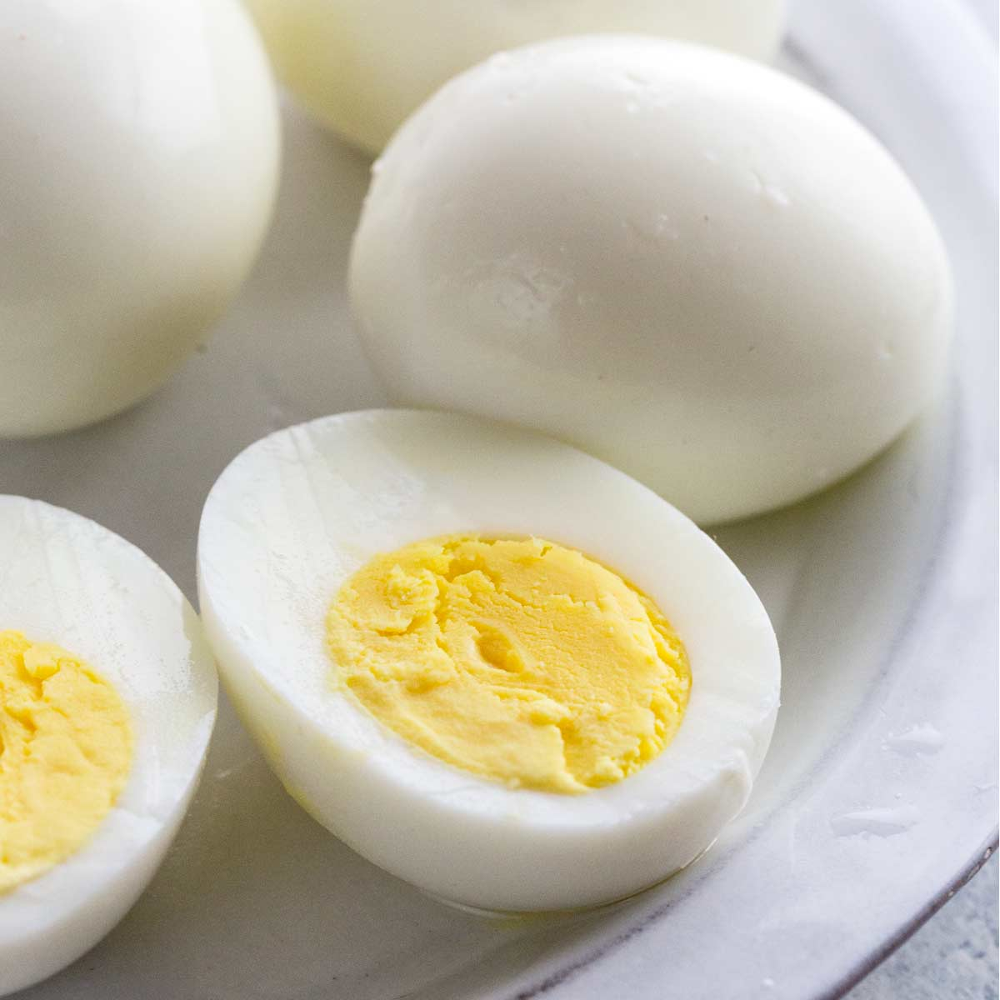

<h1>Boil Egg</h1>

<h2>Description</h2>
    <p>Very simple but essential recipie in a chef's toolbelt</p>
    <p>PS. This may seem like a parady recipie.</p>
<h2>Ingredients</h2>
    <ul>
        <li>A egg</li>
        <li>water</li>
    </ul>
<h2>Steps</h2>
    <ol>
        <li>Put water in a bowl and some eggs in that water bowl.</li>
        <li>Turn on the gas to full heat</li>
        <li>Put that bowl on the gas.</li>
    </ol>
